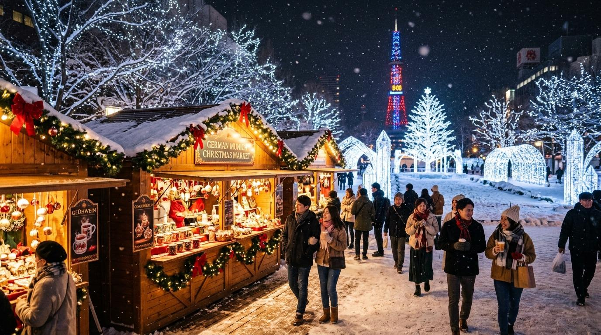
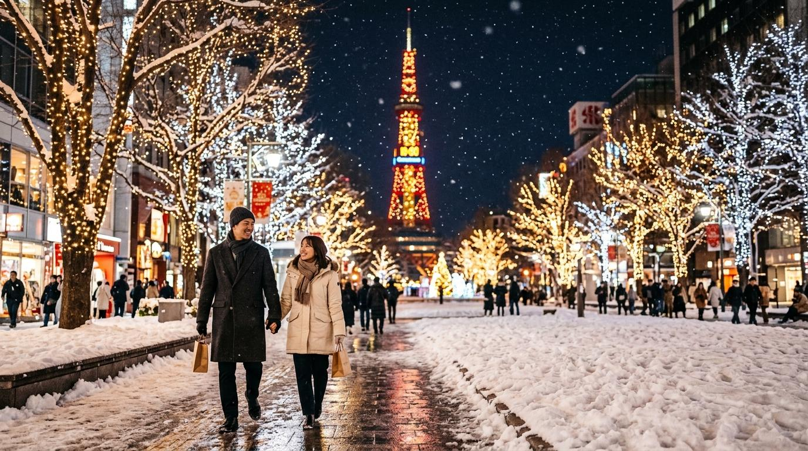
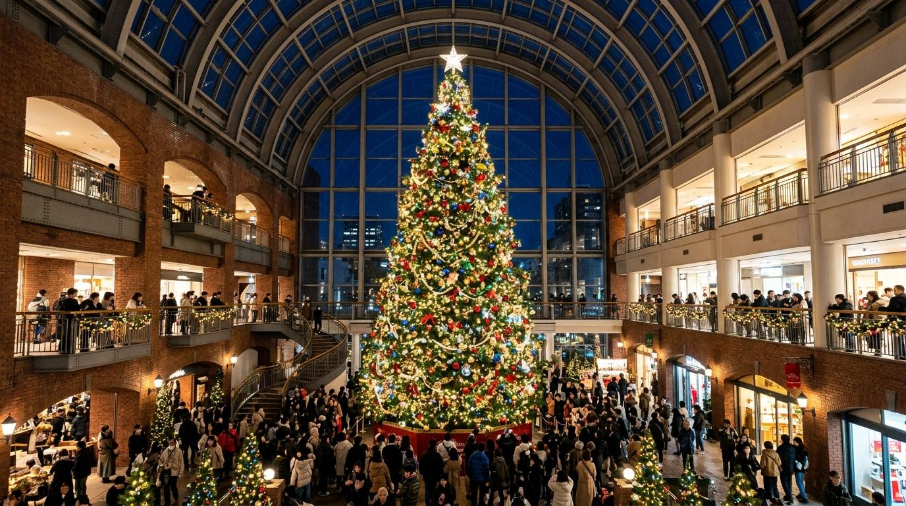
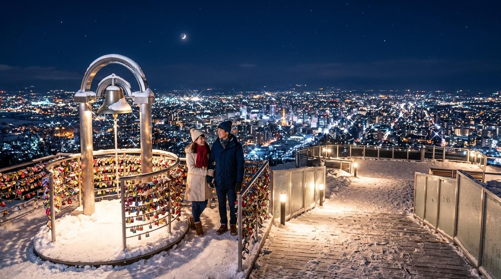

スポット 1 / 屋外・王道イルミネーション✨ さっぽろホワイトイルミネーション ＆ ミュンヘン・クリスマス市
大通公園を幻想的な光で埋め尽くす冬の札幌の風物詩。本場ドイツのクリスマスマーケットが開催され、 温かいグリューワイン（ホットワイン）や焼きソーセージを片手に歩くだけで特別な気分に浸れます。
詳しい見どころ・アクセスを見る →
白銀の世界と美しいイルミネーションが街を包み込む12月の札幌。
大切な人と忘れられないロマンチックなクリスマスを過ごせる、厳選デートスポットをご紹介します！


スポット 1 / 屋外・王道イルミネーション大通公園を幻想的な光で埋め尽くす冬の札幌の風物詩。本場ドイツのクリスマスマーケットが開催され、 温かいグリューワイン（ホットワイン）や焼きソーセージを片手に歩くだけで特別な気分に浸れます。
詳しい見どころ・アクセスを見る →
スポット 2 / 屋内・全天候型アトリウムガラス張りの巨大な全天候型アトリウムに登場する、約15メートルの本物のモミの木を使った巨大ツリー！ 1時間ごとに音楽と光が連動するショーは必見。屋内施設なので寒さを気にせず快適なデートが楽しめます。
詳しい見どころ・アクセスを見る →
スポット 3 / 絶景夜景・恋人の聖地「恋人の聖地」サテライトに選ばれている絶景スポット。標高531mから見下ろす札幌の雪景色と光のパノラマ夜景は息をのむ美しさ。 山頂展望台にある「幸せの鐘」を二人で鳴らしてロマンチックなひとときを。
詳しい見どころ・アクセスを見る →ボタンをクリックすると、今日のおすすめスポットとアドバイスが表示されます！